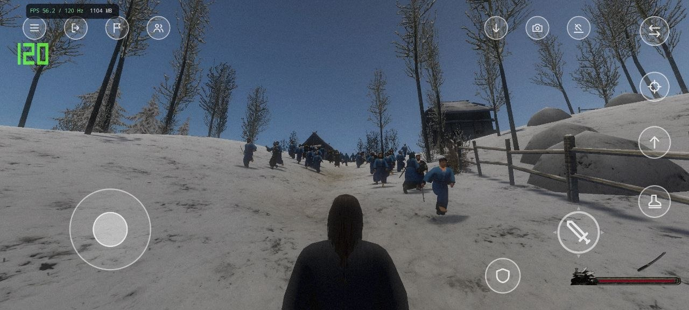

Aperçu des fonctionnalités
Compatibilité Android
Prend en charge Android 7.0 à Android 17 et les versions plus récentes, avec un traitement des threads amélioré sur Android 10 et ultérieur. Le mode plein écran HDR sans encoche offre l’expérience la plus immersive. L’épinglage des cœurs aide à augmenter les performances, et la prise en charge des écrans à haute fréquence de rafraîchissement garde le mouvement fluide. Des builds ARMv7 et ARMv8 sont disponibles, avec une compatibilité complète sur les GPU Adreno, PowerVR et Mali.
Prise en charge des langues
Les fichiers de localisation se chargent depuis les mêmes chemins que sur PC. Les fonctionnalités linguistiques avancées, comme les formes morphologiques, les cas grammaticaux et les variations de temps, fonctionnent à nouveau, et les voix localisées sont restaurées. Le français est pris en charge, polices incluses. Les langues que le jeu d’origine n’a jamais proposées bénéficient de traductions IA contextuelles de haute qualité et d’une boîte à outils intégrée pour traduire vers de nouvelles langues. Des outils de diagnostic vérifient les fichiers de langue pour détecter les problèmes.
Installation
Les localisations peuvent être installées depuis la bibliothèque du lanceur, ou en plaçant leurs fichiers directement dans les dossiers appropriés.
Chemins des dossiers
Les fichiers de localisation sont lus dans ces dossiers, où {code} est le code de langue, par exemple en ou ar :
patch/languages/{code}/pour le texte du jeupatch/Modules/{module}/languages/{code}/pour le texte des modulespatch/Data/languages/{code}/font_data.xmlpour la table de glyphes de la policemain/Textures/languages/{code}/font.ddspour l’atlas de texture de la policepatch/Modules/{module}/Sounds/languages/{code}/pour l’audiomain/Sounds/languages/{code}/pour l’audio


Personnalisation des commandes
Contrôlez le jeu avec des commandes tactiles à l’écran, une manette, ou un clavier et une souris, et configurez-les depuis le lanceur. Choisissez un thème pour les commandes tactiles, ajustez la sensibilité et l’inversion, et choisissez si les boutons directionnels réagissent aux balayages ou aux appuis. Ajoutez des touches personnalisées et choisissez leurs icônes. Les commandes tactiles apparaissent selon l’écran actuel et réagissent lorsque le jeu change d’écran, afin que les commandes correspondent à ce que vous faites.
Modules de jeu
Le routage des répertoires de modules fonctionne à nouveau, ce qui vous permet de jouer à des modules personnalisés créés par la communauté, et les ressources se chargent correctement, avec des solutions de repli. Les problèmes de compatibilité des shaders et de transparence sont corrigés, ainsi que les différences de matériaux et les problèmes d’animation. La détection des commandes propose de mapper les boutons sur les touches attendues par un module. Les couleurs et les icônes peuvent être personnalisées pour des modules spécifiques, et pour les mods moteur intégrés aux modules.


Modules tiers compatibles
- Gekokujo
- Persistent World
- 1860s Old America
- 1257AD - Enhanced Edition (partially)
- A World of Ice and Fire (partially)
- The Last Days of the Third Age (partially)
- Perisno (partially)
- Rome at War
Installation des modules
Chaque module réside dans son propre dossier, patch/Modules/{module}/. Informations sur le développement des modules :
Développement de modules
Personnalisation de l’interface tactile
touch.csv modifie l’apparence des boutons tactiles et leur position de départ. C’est un fichier texte brut avec un réglage par ligne. Voici un petit exemple :
attack.color|red
defend.x|80
*.color|#FFD700Lisez-le ligne par ligne :
attack.color|redrend le bouton d’attaque rouge.defend.x|80déplace le bouton de défense pour que son centre soit à 80 % de la largeur de l’écran, en partant de la gauche.*.color|#FFD700rend tous les autres boutons dorés. Le bouton d’attaque reste rouge, car sa propre ligne prend le pas sur*.
Enregistrez le fichier sous touch.csv dans un dossier de langue de votre module :
patch/Modules/{module}/languages/en/touch.csvs’applique à toutes les langues. Placez la plupart des réglages ici.patch/Modules/{module}/languages/{code}/touch.csvs’applique uniquement lorsque le jeu utilise cette langue, par exemple une icône différente avec une lettre.
Les clés du fichier de la langue du jeu prennent le pas sur les mêmes clés du fichier anglais.
Chaque ligne a deux parties, séparées au premier | caractère (la barre verticale) :
- À gauche de la barre : le nom du bouton, un point et le nom du réglage.
defend.xsignifie « la position x du bouton de défense ». - À droite de la barre : la valeur, par exemple
80,redou#FFD700. - Un réglage par ligne, enregistré en texte UTF-8. Une ligne sans
|est ignorée. - Si le même réglage apparaît deux fois dans un fichier, la ligne la plus tardive l’emporte.
*à la place du nom du bouton signifie tous les boutons. Cela ne fonctionne que pourcoloretbackground, pas pour la position, la taille, l’icône ou l’affichage.
Noms des boutons
- Bataille :
attack,defend,kick,jump,use,zoom,switch_weapon,next_shield,crouch,weapon_mode,drop,camera,leave,menu,chat,orders,orders_more - Ordres :
orders_up,orders_choose,orders_down,orders_back - Carte :
map_look,fast_travel,map_camera,stop_rest,map_menu - Commerce :
trade_take_all,trade_give_all,trade_cancel - Compagnie :
party_stack,party_ten - Autre :
screen_back,dialog_up,dialog_select,dialog_down - Assignables :
extra1àextra10 - Mod :
mod.{mod id}.{button id}
Le stick de déplacement n’est pas un bouton touch.csv. Sa taille et sa position sont choisies par le joueur, donc touch.csv ne peut pas les modifier.
Les réglages :
attack.icon|M4 20 L20 4 M14 4 H20 V10définit l’icône sous forme de commandes de tracé SVG (M, L, H, V, C, S, Q, Z) sur une grille de 24 × 24. Pour ne modifier qu’une version d’un bouton, ajoutez son action :kick.game.kick.iconest le coup de pied lorsque vous êtes à pied, etkick.game.action.iconest le coup de pied à cheval.*.color|#FFD700définit la couleur de l’icône ou du libellé. Écrivez#RRGGBB,#AARRGGBB, ou un nom de couleur tel quered.defend.background|#C0301010définit le disque derrière le bouton lorsqu’il n’est pas enfoncé.defend.x|80etdefend.y|89définissent le centre du bouton, en pourcentage de la largeur et de la hauteur de l’écran, de 0 à 100.defend.size|14définit le diamètre, en pourcentage du côté le plus court de l’écran, de 6 à 40.kick.shown|falsedéfinit si le bouton est affiché à l’écran par défaut. Écriveztrueoufalse.
Les valeurs hors de leur plage sont limitées à celle-ci, et une couleur ou une clé invalide est ignorée. Les positions ne sont que des valeurs par défaut : un bouton déplacé, redimensionné ou masqué par le joueur conserve son réglage. La réinitialisation dans l’éditeur rétablit les valeurs du module.
Chemin et empaquetage des mods moteur
Un module peut fournir des mods moteur dans patch/Modules/{module}/mods/. Chaque entrée est soit :
- un
.zipdu paquet, avec ses fichiers à la racine ou dans un seul dossier - un dossier avec les fichiers du paquet :
manifest.json,mod.armv7.oet/oumod.arm64.o, et éventuellementmod.jar
Lorsque le joueur sélectionne le module, il lui est demandé une fois s’il faut les exécuter. Ils ne s’exécutent qu’avec ce module, avec leurs réglages par défaut.
Multijoueur et mise à niveau du moteur
Jouez sur des serveurs multijoueur compatibles avec les versions 1.158 et 1.174, y compris en LAN. Parcourez et rejoignez des serveurs personnalisés, et le lanceur bascule automatiquement sur le module requis par le serveur sélectionné.
Les fonctionnalités du moteur PC et les opcodes de script sont mis à jour jusqu’à Warband 1.173. L’importation et l’exportation de personnages sont prises en charge. Le multijoueur fonctionne avec Warband 1.174.
Ajouts de gameplay
Les shaders Live Sky animent les nuages et ajoutent des effets mobiles au ciel nocturne. Les shaders Live Trees font osciller les arbres et les autres végétaux. Fire Damage et Water Physics & Drowning sont disponibles dans la bibliothèque : le feu peut blesser les personnages, et l’eau ajoute le barbotage, l’enfoncement et la noyade. Hit Vibration peut faire vibrer le téléphone lorsque vous subissez ou infligez des dégâts, les coups plus forts produisant des vibrations plus fortes. Toutes ces fonctionnalités peuvent être activées ou désactivées dans le lanceur.
Vitesse de chargement et performances de jeu améliorées
Le jeu démarre plus vite en lisant les fichiers en même temps et en chargeant les données des modules et les textures par petits lots. Il compile aussi les shaders sur plusieurs threads et les met en cache, afin qu’ils se chargent plus vite la fois suivante. Le streaming de textures garde les textures petites jusqu’à ce qu’elles apparaissent à l’écran, puis les réduit à nouveau lorsqu’elles ne sont plus nécessaires. Cela économise de la mémoire.
Le jeu ARM64 a été entièrement retraduit avec de nouvelles optimisations, et les zones lentes du moteur ont été réécrites. Par conséquent, le build ARM64 surpasse désormais le build ARMv7 d’origine. Les zones réécrites comprennent l’animation, la visibilité, les collisions, le terrain, le ciblage et le dessin, ce qui réduit le travail que demandent ces tâches. Le jeu et les graphismes peuvent aussi utiliser les cœurs CPU les plus rapides de l’appareil, tandis que les tâches d’arrière-plan utilisent les autres. La carte du monde reste plus fluide lorsque vous accélérez le temps.
Formats de texture
Les appareils qui prennent déjà en charge les formats de texture DXT BC1–3 utilisent immédiatement les textures natives. Les appareils sans prise en charge DXT ont le choix : convertir les textures une fois et les charger rapidement, ou les transcoder à chaque chargement. Le module de bibliothèque retexcon, écrit de zéro, gère les formats ASTC, ETC1, ETC2 et RGB8, y compris la transparence. Il atteint une précision de 99,8 % et s’exécute plusieurs fois plus vite que la bibliothèque open source d’ARM. Pour les appareils d’entrée de gamme, la taille de bloc et la résolution des textures peuvent être configurées, avec des exceptions pour les textures importantes comme les polices et les skybox. Le build 64 bits charge les textures dans des régions de mémoire séparées, ce qui permet des textures plus grandes et laisse plus de place aux autres ressources du jeu. Les textures de skybox HDR sont entièrement prises en charge. La prise en charge de TexturesHD est restaurée, et certaines textures ont été réparées des artefacts de compression DXT. Notre moteur de textures prend aussi en charge le streaming de textures à la demande, ce qui divise par deux la RAM nécessaire.
Post-traitement et HDR
PostFX Restore rétablit la pipeline de post-traitement absente du portage mobile : ses passes de rendu, ses techniques de shader et des effets comme l’exposition, le bloom et le flou. Il utilise des cibles de rendu en virgule flottante de plus haute précision lorsque l’appareil les prend en charge. Le réglage gamma du jeu fonctionne aussi.
Sur les appareils et écrans compatibles, la sortie HDR utilise HDR10 ou HLG pour étendre la plage de luminosité et de couleurs au-delà de la sortie standard. Un mappage tonal avancé par pixel permet aux zones lumineuses d’atteindre les hautes lumières HDR tout en préservant le reste de l’image. Le mode automatique préfère HLG, puis HDR10. La sortie HDR nécessite la prise en charge de l’appareil, du pilote graphique et de l’écran ; sinon le jeu utilise la sortie SDR standard.
Réduction du scintillement
Le jeu peut utiliser un tampon de profondeur 24 bits au lieu de son tampon 16 bits d’origine. Cela aide à empêcher le scintillement des surfaces éloignées. Le réglage de profondeur de scène propose 24 bits (D24S8) et, sur les appareils compatibles, du flottant 32 bits (D32F).
Le format de framebuffer contrôle la quantité de détails de couleur que l’écran peut afficher. Il propose les formats pris en charge par l’appareil : RGB888 (24 bits), RGB10A2 (30 bits) et RGBA16F (flottant 64 bits). Un détail de couleur plus élevé aide à réduire les bandes visibles dans les dégradés. Le tramage GPU peut aussi être désactivé ; il peut provoquer un motif de points fixe sur les couleurs 16 bits.
Le mod TAA conçu sur mesure ajoute un anti-aliasing temporel, que le jeu d’origine ne possédait pas. Comme les fonctionnalités graphiques modernes telles que NVIDIA DLSS, il utilise les informations des images voisines pour lisser les bords crénelés et réduire le scintillement.
Les niveaux de détail des arbres se fondent en douceur lorsque vous vous déplacez, y compris pour les arbres placés dans le monde. Cela évite les changements brusques, le scintillement, les lignes mouvantes et les troncs qui se chevauchent lorsque les arbres changent de niveau de détail. Les feuilles conservent leur forme en s’estompant, sans bords sombres. L’herbe et les petites plantes apparaissent en fondu au lieu de surgir d’un coup.
Ombres améliorées
Les ombres d’environnement sont restaurées sur les puces graphiques autres que Tegra, avec des bords plus doux au lieu de blocs carrés. Des correctifs aident à éviter que les ombres disparaissent après une réinitialisation des ressources graphiques ou en cas d’échec de la shadow map. Les ombres des personnages proches se mettent à jour plus souvent et sont plus précises. Les ombres des personnages et des arbres n’apparaissent plus d’un coup ; leurs transitions sont douces. Le mode texture de profondeur optionnel apporte des ombres d’environnement aux bords doux et un ajustement plus proche pour un détail plus net.
Transitions entre scènes
Les changements de scène peuvent s’effacer puis réapparaître pour masquer les flashs noirs et les restes de la scène précédente. L’image précédente reste visible pendant le dessin de la nouvelle scène. Les fondus peuvent être désactivés.
TTS et STT
La synthèse vocale peut lire à voix haute les conversations et vos options de dialogue choisies. La parole est disponible dans les langues prises en charge. Vous pouvez aussi activer les notifications parlées, les messages de scène et le chat multijoueur.
La reconnaissance vocale vous permet de dicter le chat avec la reconnaissance vocale du téléphone. En bataille, utilisez le bouton micro ou une touche mappée pour donner des ordres : commandez des groupes nommés ou tout le monde, ou exécutez l’un de vos ordres personnalisés. Les fonctionnalités vocales peuvent être configurées dans les réglages des mods du lanceur.
Overlays de débogage
Affichez les FPS, l’utilisation de la RAM, le ping, la température de l’appareil et l’état du bridage thermique dans un overlay. Ajustez le gamma, la saturation et le contraste pour régler l’image du jeu.
Personnalisation de l’interface
Ajustez la taille des messages, réglez l’interface en 4:3 ou 16:9, et contrôlez si les boutons tactiles restent dans l’image du jeu. Vous pouvez garder les batailles et la carte du monde en plein écran, masquer les pop-ups et masquer les messages d’erreur à l’écran.
Le lanceur comprend un éditeur pour le fichier rgl_config.txt contenant les réglages du jeu. Recherchez des réglages, modifiez-les avec des curseurs, des interrupteurs et des menus, ou utilisez une vue de texte brut. Comparez les valeurs avec les valeurs par défaut du jeu et réinitialisez la configuration si nécessaire. Les modifications prennent effet la prochaine fois que le jeu lit le fichier.
Gestion des sauvegardes
Gérez les sauvegardes depuis le lanceur : importez et exportez des fichiers de sauvegarde, créez et restaurez des sauvegardes, et modifiez les savedata.